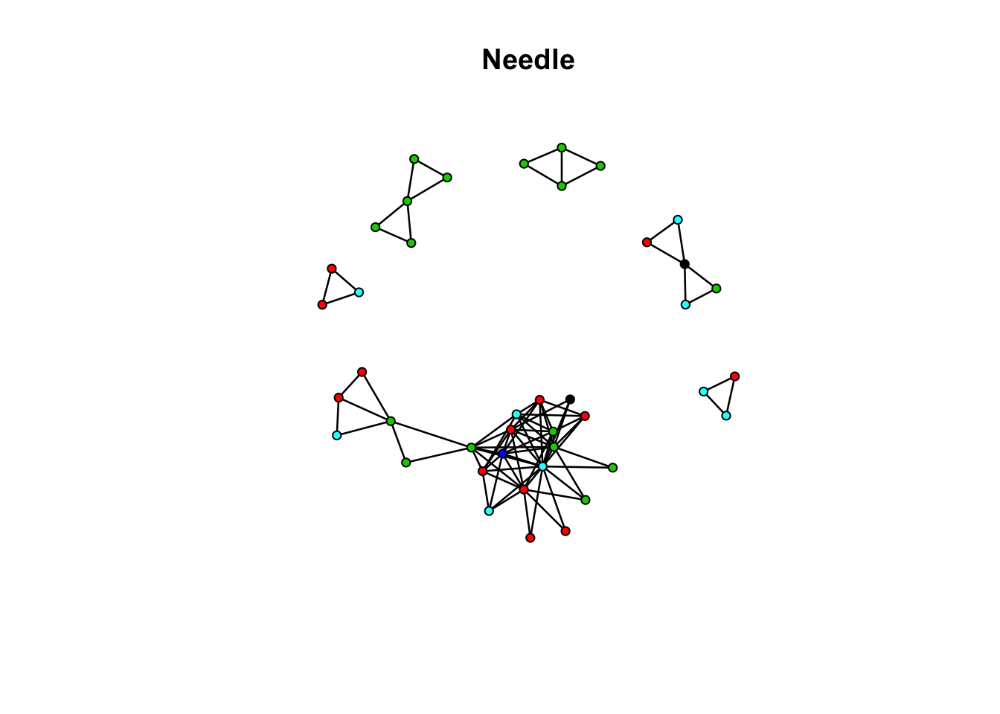
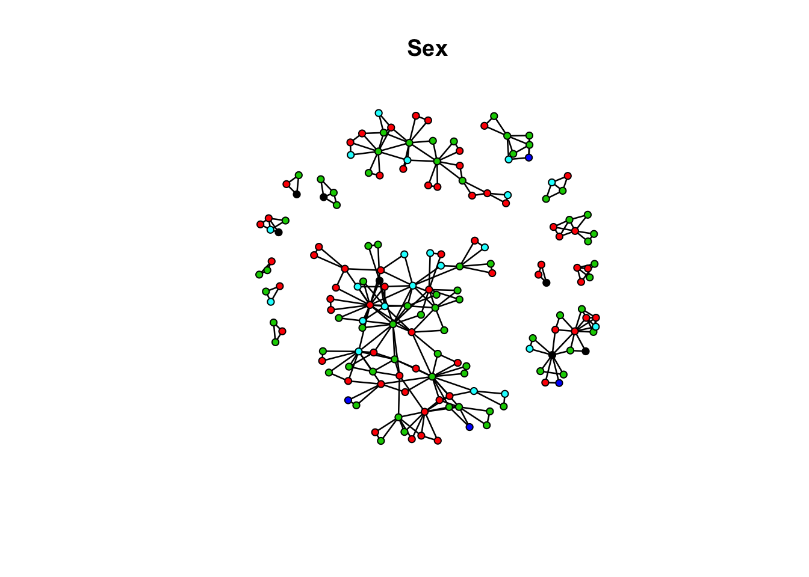
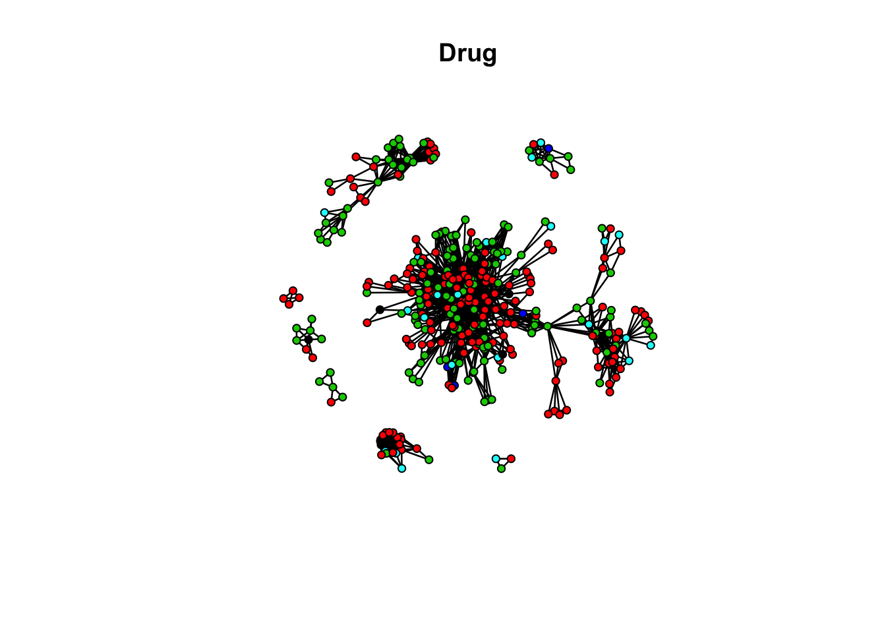
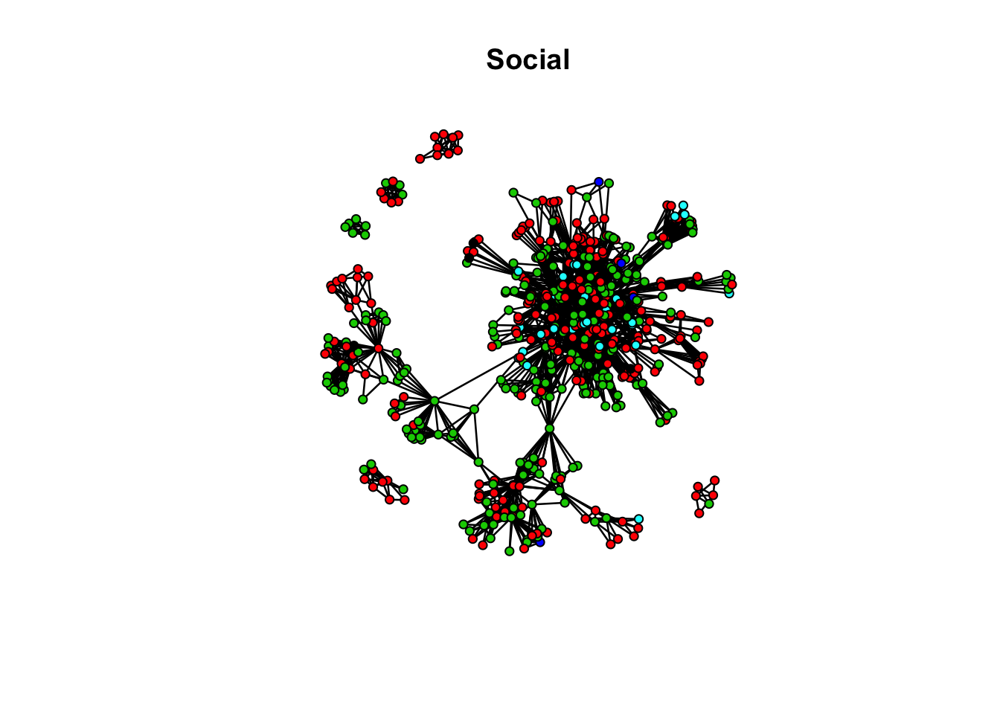

library(ergm)
library(sna)
library(coda)The data was aggregated by Martina Morris (University of Washington) and Richard Rothenberg (Emory University) and put online at ICPSR. The original data can be found here. In this exercise we are goint to investigate four networks derived from the Rural Arizona risk networks in Flagstaff, AZ. These networks were collected from May 1996 to Jan 1998 and originally had 95 respondents interviewed 5 times each. All participants are over 18 years old. This network was generated from random walk sampling strategy. Warning These networks are obviously from network sample and not true complete networks, but we are going to ignore that for this exercise and will treat them as complete.
Here, I have constructed 4 networks with attributes: race, ethnicity, sex, and age.
Load the data:
load("data/flagstaff_rural.rda")flag_needle_net Network attributes:
vertices = 42
directed = FALSE
hyper = FALSE
loops = FALSE
multiple = FALSE
bipartite = FALSE
total edges= 87
missing edges= 0
non-missing edges= 87
Vertex attribute names:
age ethn id race sex vertex.names
No edge attributesplot(flag_needle_net, vertex.col = "race", main = "Needle")
flag_sex_net Network attributes:
vertices = 167
directed = FALSE
hyper = FALSE
loops = FALSE
multiple = FALSE
bipartite = FALSE
total edges= 282
missing edges= 0
non-missing edges= 282
Vertex attribute names:
age ethn id race sex vertex.names
No edge attributesplot(flag_sex_net, vertex.col = "race", main = "Sex")
flag_drug_net Network attributes:
vertices = 352
directed = FALSE
hyper = FALSE
loops = FALSE
multiple = FALSE
bipartite = FALSE
total edges= 1626
missing edges= 0
non-missing edges= 1626
Vertex attribute names:
age ethn id race sex vertex.names
Edge attribute names not shown plot(flag_drug_net, vertex.col = "race", main = "Drug")
For each network explore the basic properties of the network (e.g., mixing matrix, density, etc.) and then attempt to develop a “good” ERG model for each network. After you have the best ERG model you can construct, use the tutorial to try to interpret the predicted probabilities and odds ratio of a given conditional tie. Further, attempt to explain what these results would mean substantively.
Social Contact Network
